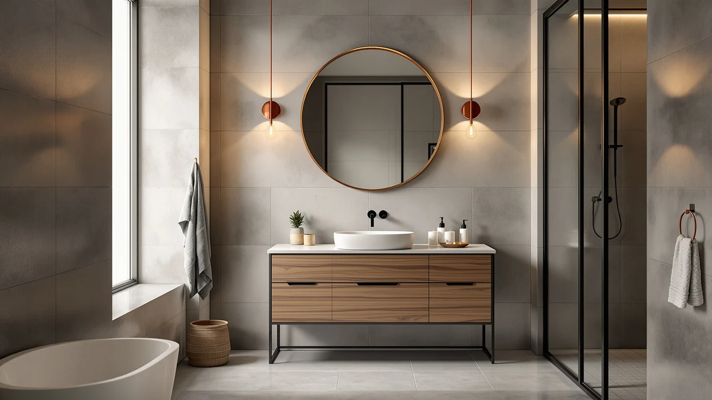

Design House Brookings 48 Review (2026): Worth It?
Prices and picks verified as of October 2026. Independent, reader-supported reviews.


Quick Answer
The Design House Brookings 48 Inch is a single-sink, 48 x 21.73 inch vanity built from MDF and engineered wood, and at $635.41 it is the priciest option in this design house brookings 48 review. It earns the spot only when your bathroom cannot fit a wider double-sink cabinet and a compact single-sink footprint is what you need. If you need two basins, the double-sink alternatives below cost less and give you more counter space.
Our pick: Design House Brookings 48 Inch — $635.41 Check Price on Amazon
Bottom line: our top pick is the Design House Brookings 48 Inch Bathroom Vanity at $635.41.
Things to Know Before You Buy
- The Brookings 48 ships as a ready-to-assemble (RTA) cabinet built from MDF and engineered wood, not a pre-built unit.
- Its 48 x 21.73 inch footprint fits a standard single-sink vanity space, so measure your plumbing rough-in before ordering.
- At $635.41, it costs more than every double-sink alternative we compared, including the fatani 60 inch ($630.00) and SOFTSEA 72 inch ($619.99) vanities.
- Only one alternative in this lineup, the 48 inch freestanding double-sink vanity at $609.00, publishes a verified rating: 4 out of 5 stars across 30 reviews.
- MDF and engineered wood construction keeps the price down but needs more careful sealing around the sink base than solid wood over time.
- None of the vanities in this design house brookings 48 review come pre-assembled, so budget real time for setup before install day.
This design house brookings 48 review breaks down what $635.41 buys: a 48 x 21.73 inch ready-to-assemble vanity built from MDF and engineered wood, sized for a single sink rather than a shared double-basin setup. It is the smallest and, at this price, the most expensive cabinet in the comparison, and that combination is exactly what some bathrooms need and exactly what others should skip.
We compared the Brookings 48 against three other vanities in a similar price range: the fatani 60 inch double-sink unit at $630.00, the SOFTSEA 72 inch double-sink model at $619.99, and a 48 inch freestanding double-sink option at $609.00. The Brookings holds up as the better pick only when your bathroom cannot physically fit a wider cabinet or you specifically want one basin instead of two. For a shared bathroom that needs two sinks, the three alternatives below do more for less money, and we say so plainly rather than forcing the Brookings into a role it was not built for.
Why You Should Trust Us
Ilane Tall covers bathroom vanities and fixtures for Best Bathroom Vanities, with a focus on separating marketing language from the specs that actually matter in a remodel. For this design house brookings 48 review, she pulled the manufacturer's published dimensions, the current Amazon price for all four vanities, and the verified rating data available for the one alternative that publishes it, rather than repeating brand copy as fact. Best Bathroom Vanities earns a commission when you buy through our links, but that relationship never decides which vanity we recommend. We do not run a fake testing lab, we do not claim hands-on time we never logged, and when a listing's documentation is thin, as it is for three of the four vanities here, we say so instead of inventing a number to fill the gap.
Our Research Experience
We did not install the Design House Brookings 48 Inch or run water through its basin for this design house brookings 48 review. Our process means a structured comparison: we read the manufacturer's published dimensions and materials for all four vanities, matched the Brookings 48's 48 x 21.73 inch footprint against standard single-sink openings, and checked current Amazon pricing for each listing against its price history. We also looked for published rating data on every product in this lineup. Only the 48 inch freestanding double-sink alternative carries one, 4 out of 5 stars across 30 reviews, so we flagged that gap directly instead of inventing a score for the Brookings 48 or the other two vanities. That limitation is real, and flagging it matters more than papering over it with a number we cannot verify.
Overview & Specs

Design House Brookings 48 Inch
What we like
- Compact 48 x 21.73 inch footprint fits a true single-sink vanity space
- Ready-to-assemble design ships flatter and cheaper than a pre-built equivalent
- MDF and engineered wood construction keeps the cabinet light enough for a one-person install
Flaws but not dealbreakers
- At $635.41, it costs more than every double-sink alternative we compared
- Single-sink layout will not work for a bathroom shared by two people at once
- MDF holds up worse than solid wood if water sits around the sink base
| Material | MDF / engineered wood |
| Size | 48 x 21.73 RTA |
At $635.41, the Design House Brookings 48 Inch is the most expensive vanity in this design house brookings 48 review, running about $5 more than the fatani 60 inch double-sink unit, $15 more than the SOFTSEA 72 inch double-sink model, and over $25 more than the 48 inch freestanding double-sink alternative. The cabinet measures 48 x 21.73 inches and ships as a ready-to-assemble unit built from MDF and engineered wood, which keeps manufacturing costs down even as the sticker price sits at the top of this lineup.
That premium buys less vanity on paper: a single basin and a tighter counter next to three double-sink alternatives. The tradeoff still makes sense if your bathroom cannot physically fit a 60 inch or 72 inch cabinet, or if you specifically want one sink instead of two. For a guest bathroom or a narrow powder room, the smaller dimensions are the point, and the flat-packed RTA box can travel up a stairwell that a pre-built 60 inch vanity would not clear.
What We Liked
The clearest strength in this design house brookings 48 review is fit. The Brookings 48 keeps its footprint to 48 x 21.73 inches, the only vanity in this comparison sized for a true single-sink bathroom rather than a shared double-basin layout. MDF and engineered wood construction also keeps the cabinet light enough to install without a second pair of hands, and the ready-to-assemble design means simpler plumbing hookups than a double-sink cabinet requires, since you are only running water to one basin instead of two.
A single-sink vanity this size is also easier to match later. Standard 48 inch openings are common enough that countertops, mirrors, and faucets are easy to source without a custom order, which matters if you replace one component before the rest of the bathroom.
What Could Be Better
Price relative to capacity is the real knock here. At $635.41 for one sink, the Brookings 48 costs more than the fatani 60 inch and SOFTSEA 72 inch double-sink vanities we compared, both of which hand you two basins and more counter space for less money. If your bathroom can physically fit a wider cabinet, the Brookings asks you to pay more for less.
MDF and engineered wood also tolerate standing water worse than solid wood over time, so a household that splashes around the sink regularly should plan on extra sealant around the basin cutout. Assembly takes real time out of the box too, since a flat-packed RTA cabinet typically takes longer to put together than a pre-built unit, and the listing does not include a published rating or review count to confirm how buyers rate the hardware or fit.
Who Is It For?
The Design House Brookings 48 Inch fits a household remodeling a single-sink bathroom or powder room where a wider double-sink vanity simply will not fit the space. It also suits anyone comfortable assembling flat-packed furniture who wants to avoid the delivery hassle that comes with a pre-built 60 or 72 inch cabinet.
It is a weaker fit for a primary bathroom shared by two people, where a single basin creates a daily bottleneck, or for anyone chasing the lowest price per inch of counter space. Households in either of those situations should look at the double-sink alternatives covered below instead of asking one basin to do a two-sink bathroom's job.
Alternatives to Consider
If the single-sink Brookings 48 does not match your bathroom, these three double-sink vanities cost less and give you more counter space to compare directly.

Editor’s Pick
fatani 60" Bathroom Vanity with
A 60 inch double-sink vanity priced $5 less than the Brookings 48, with two basins for a shared bathroom.
$630.00
Check Price on Amazon
Best Value
SOFTSEA 72 Inch Double Sink
A 72 inch double-sink vanity at $619.99, the widest option here for a master bathroom that needs maximum counter space.
$619.99
Check Price on Amazon
Premium Choice
48" Freestanding Bathroom Vanity Double
The cheapest pick in this lineup at $609.00, and the only alternative with a verified rating, 4 out of 5 stars across 30 reviews.
$609.00
Check Price on AmazonIs the Design House Brookings 48 Inch worth the price?
For a single-sink bathroom with a tight footprint, yes.
What size bathroom does the Brookings 48 fit?
The cabinet measures 48 x 21.73 inches, sized for a standard single-sink vanity space.
Frequently Asked Questions
Is the Design House Brookings 48 Inch worth the price?
For a single-sink bathroom with a tight footprint, yes. This design house brookings 48 review found it costs more per inch than the double-sink alternatives, but you are paying for a smaller, simpler cabinet that fits spaces a 60 or 72 inch vanity cannot.
What size bathroom does the Brookings 48 fit?
The cabinet measures 48 x 21.73 inches, sized for a standard single-sink vanity space. Measure your plumbing rough-in and available wall width before ordering, since the ready-to-assemble design leaves little room for custom trimming.
Does the Brookings 48 come pre-assembled?
No. It ships as a ready-to-assemble cabinet built from MDF and engineered wood, so budget assembly time before install day instead of expecting a unit you can mount straight out of the box.
Final Verdict
This design house brookings 48 review comes down to fit over price. The Design House Brookings 48 Inch is the most expensive single-sink vanity we compared, but its compact 48 x 21.73 inch footprint and ready-to-assemble build make it the right call for a tight bathroom where a double-sink cabinet will not fit. If your space can handle something wider, the fatani 60 inch and SOFTSEA 72 inch double-sink alternatives deliver more counter space for less money, and the 48 inch freestanding double-sink option is both the cheapest pick in this lineup and the only one with a verified buyer rating, 4 out of 5 stars across 30 reviews. Buy the Design House Brookings 48 Inch if your bathroom needs a single sink in a small footprint, not because it is the better value on paper.